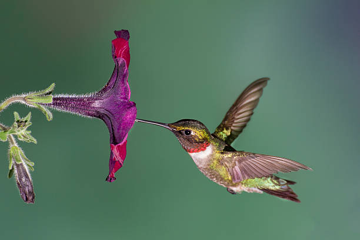

Hummingbird

- The ruby-throated hummingbird (Archilochus colubris) is a species of hummingbird that generally migrates to Canada and other parts of Eastern North America for the summer to breed.
- Scientific Name: Archilochus colubris
- Length: 11 centimeters
- Lifespan: 7 years 1 month
- Habitat: Tropical coral reefs
- Ruby-throated hummingbirds are solitary. Adults of this species are not social, other than during courtship (which lasts a few minutes);
the female also cares for her offspring. Both males and females of any age are aggressive toward other hummingbirds. They may defend territories,
such as a feeding territory, attacking and chasing other hummingbirds that enter.